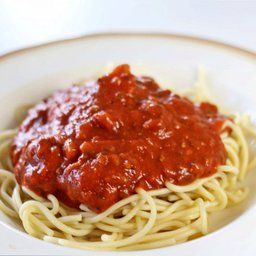

Servings: 6
Prep time: 10 minutes

Ingredients
- 3 tablespoons of olive oil
- 1 medium onion
- 3-5 cloves of garlic; minced
- 2 teaspoons of dried basil
- 1/4 teaspoon of red pepper flakes
- 1/2 teaspoon Kosher salt
- 1/2 teaspoon granulated sugar
- 2 teaspoons of unsalted butter
- 1 28 ounce can of crushed tomatoes
- 1/4 cup of water
- 400 grams of ground beef
Instructions
- Heat pan on medium heat with 1 tablespoon of olive oil. Cook ground beef 6-7 or until cooked through, breaking into peices as it cooks.
- Remove ground beef from pan and set aside. In the same pan, heat the olive oil over high heat until it shimmers. Saute the onions, stirring frequently, until they soften and shine, about three minutes. The onions should sizzle and hiss as they cook. Add the garlic. Stir to combine. This prevents the garlic from burning. Cook an additional two minutes. Add the basil, red pepper flakes, salt, and sugar. Stir to combine. Add the butter. Stir, cook for about a minute.
- Add 1/2 can of the crushed tomatoes. Scrape the bottom of the pan to remove any stuck on bits. Reduce heat to low. Add remaining tomatoes. Stir in 1/4 cup water. If the sauce seems too thick, add additional water.
- Allow sauce to simmer for 10 minutes to up to one hour. If simmering for a longer, stir the sauce occasionally and add additional water as needed to keep the sauce at the correct consistency.